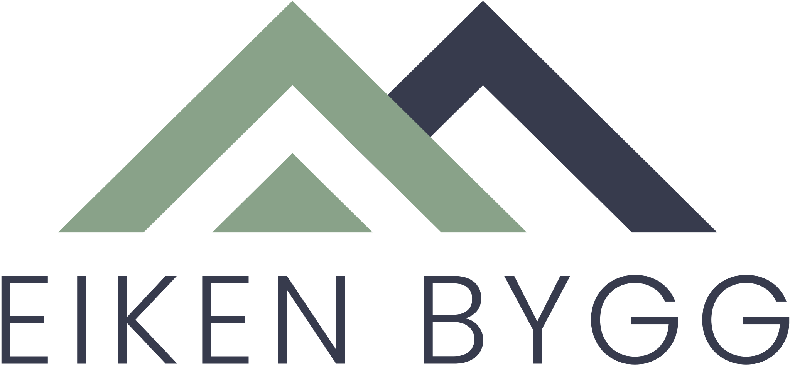

Totalrenovering / Husøy
Et gammelt hus, bygget opp for en ny tid
Velg en retning

Eiken Bygg / Designsprint / 21. september 2026
Velg et prosjekt og utforsk tre designretninger. Samme historie, forskjellig rytme og uttrykk.
Totalrenovering / Husøy
Velg en retning
Nybygg / Horten
Velg en retning
Anbefalt retning
Start med A, «Historien». Den kombinerer en varm presentasjon med tidlige prosjektfakta, håndverksvalg og direkte kontakt med Henrik. B prioriterer utførelsen før bakgrunnshistorien. C løfter oppfølging og neste steg tidligere frem.
Alle retningene bruker samme faktagrunnlag. Bytt retning øverst på prosjektsiden for å sammenligne. Dette er designhypoteser, ikke målte konverteringsvinnere.
Prosjektbildene er fiktive KI-illustrasjoner. Bildet av Henrik er ekte. Kundesitater og opplysninger som mangler i kildene er utelatt. Kontaktlenkene går til Eiken Bygg.